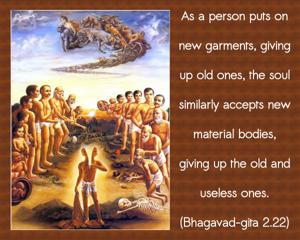
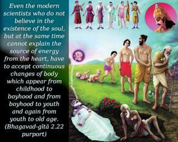
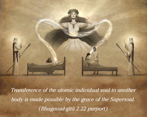

As a person puts on new garments, giving up old ones, the soul similarly accepts new material bodies, giving up the old and useless ones.



Change of body by the atomic individual soul is an accepted fact. Even the modern scientists who do not believe in the existence of the soul, but at the same time cannot explain the source of energy from the heart, have to accept continuous changes of body which appear from childhood to boyhood and from boyhood to youth and again from youth to old age. From old age, the change is transferred to another body. This has already been explained in a previous verse (2.13).
Transference of the atomic individual soul to another body is made possible by the grace of the Supersoul. The Supersoul fulfills the desire of the atomic soul as one friend fulfills the desire of another. The Vedas, like the Muṇḍaka Upaniṣad, as well as the Śvetāśvatara Upaniṣad, compare the soul and the Supersoul to two friendly birds sitting on the same tree. One of the birds (the individual atomic soul) is eating the fruit of the tree, and the other bird (Kṛṣṇa) is simply watching His friend. Of these two birds – although they are the same in quality – one is captivated by the fruits of the material tree, while the other is simply witnessing the activities of His friend. Kṛṣṇa is the witnessing bird, and Arjuna is the eating bird. Although they are friends, one is still the master and the other is the servant. Forgetfulness of this relationship by the atomic soul is the cause of one’s changing his position from one tree to another, or from one body to another. The jīva soul is struggling very hard on the tree of the material body, but as soon as he agrees to accept the other bird as the supreme spiritual master – as Arjuna agreed to do by voluntary surrender unto Kṛṣṇa for instruction – the subordinate bird immediately becomes free from all lamentations. Both the Muṇḍaka Upaniṣad (3.1.2) and Śvetāśvatara Upaniṣad (4.7) confirm this:
samāne vṛkṣe puruṣo nimagno
’nīśayā śocati muhyamānaḥ
juṣṭaṁ yadā paśyaty anyam īśam
asya mahimānam iti vīta-śokaḥ
“Although the two birds are in the same tree, the eating bird is fully engrossed with anxiety and moroseness as the enjoyer of the fruits of the tree. But if in some way or other he turns his face to his friend the Lord and knows His glories – at once the suffering bird becomes free from all anxieties.” Arjuna has now turned his face towards his eternal friend, Kṛṣṇa, and is understanding the Bhagavad-gītā from Him. And thus, hearing from Kṛṣṇa, he can understand the supreme glories of the Lord and be free from lamentation.
Arjuna is advised herewith by the Lord not to lament for the bodily change of his old grandfather and his teacher. He should rather be happy to kill their bodies in the righteous fight so that they may be cleansed at once of all reactions from various bodily activities. One who lays down his life on the sacrificial altar, or in the proper battlefield, is at once cleansed of bodily reactions and promoted to a higher status of life. So there was no cause for Arjuna’s lamentation.